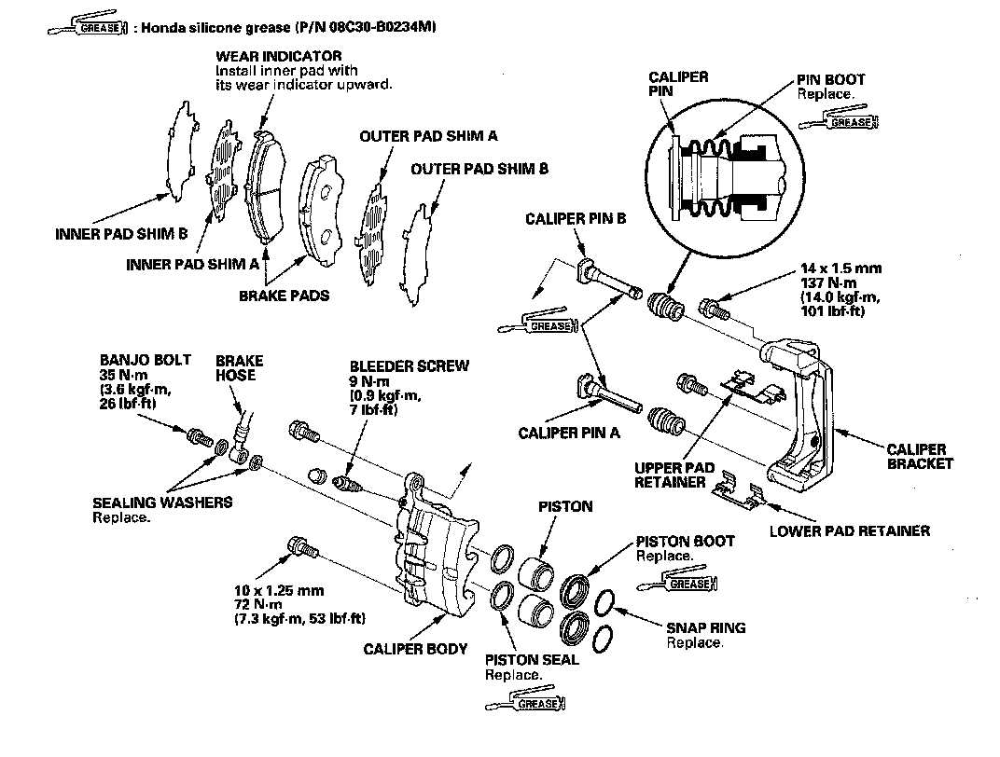

Front/Overhaul
Front Brake Caliper OverhaulCAUTION: Frequent inhalation of brake pad dust, regardless of material composition, could be hazardous to your health.
^ Avoid breathing dust particles.
^ Never use an air hose or brush to clean brake assemblies. Use an OSHA-approved vacuum cleaner.
Remove, disassemble, inspect, reassemble, and install the caliper, and note these items:
NOTE: Make sure that the caliper pins are installed correctly, Upper caliper pin B and lower caliper pin A are different. If these caliper pins are installed in the wrong location, it will cause vibration, uneven or rapid pad wear, and possibly uneven tire wear.
^ Do not spill brake fluid on the vehicle; it may damage the paint; if brake fluid gets on the paint, wash it off immediately with water.
^ To prevent dripping brake fluid, cover disconnected hose joints with rags or shop towels.
^ Clean all parts in brake fluid and air dry; blow out all passages with compressed air.
^ Before reassembling, check that all parts are free of dirt and other foreign particles.
^ Replace parts with new ones as specified in the illustration.
^ Make sure no dirt or other foreign matter gets in the brake fluid.
^ Make sure no grease or oil gets on the brake discs or pads.
^ When reusing brake pads, always reinstall them in their original positions to prevent loss of braking efficiency.
^ Do not reuse drained brake fluid. Use only clean Acura DOT 3 Brake Fluid from an unopened container. Using a nonAcura brake fluid can cause corrosion and shorten the life of the system.
^ Do not mix different brands of brake fluid as they may not be compatible.
^ Coat the pistons, piston seal grooves, and caliper bores with clean brake fluid.
^ Replace all rubber parts with new ones whenever disassembled.
^ After installing the caliper, check the brake hose and line for leaks, interference, and twisting.
